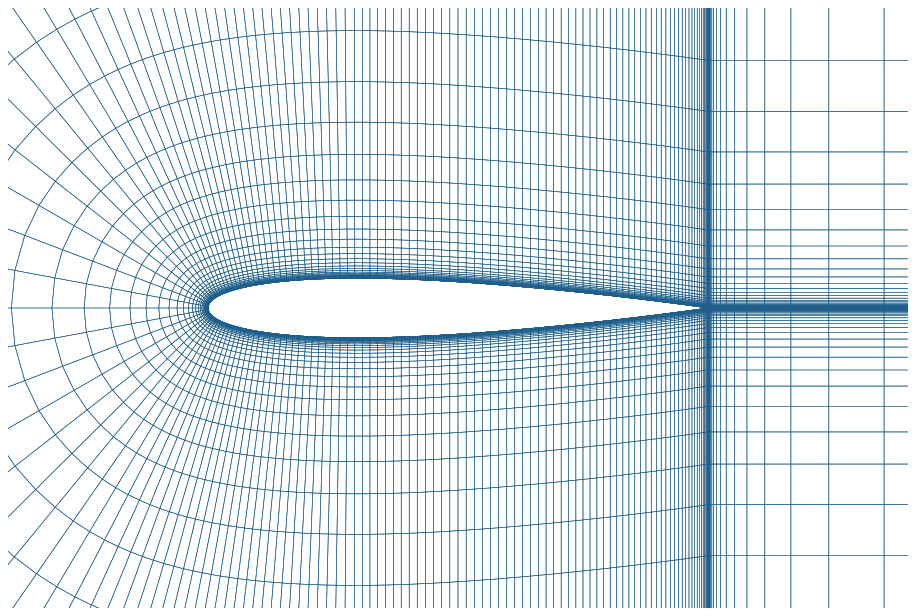
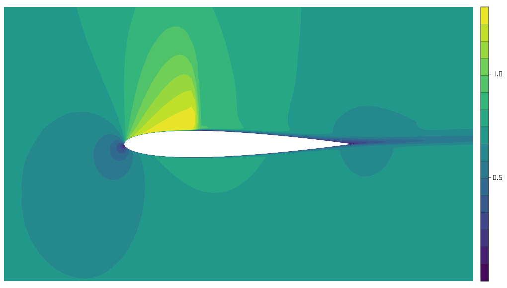

NACA 0012, Mach 0,703, α 4,03°
Profil NACA 0012 nach AGARD AR-138, Anhang A1, Messpunkt Mach 0,703 und Anstellwinkel 4,03°. Gerechnet wird voll turbulent mit Spalart-Allmaras bei den Werten, die der Steckbrief nennt (wandkorrigiert nach dem Bericht).
Steckbrief
| Angabe | Wert |
|---|---|
| Machzahl der Zuströmung | 0,7030 |
| Reynoldszahl | 3,75·106 |
| Modell | Navier-Stokes, turbulent (Spalart-Allmaras) |
| Netz | 16.384 Zellen |
| Zeitverfahren | Newton-Krylov (implizit) |
| Ergebnis der Rechnung | konvergiert nach 121 Schritten, relatives Residuum 6,9·10−9 |
Was der Fall zeigt
Zweck
Der Fall prüft die Umströmung eines Profils mit Reibung und Turbulenzmodell (Spalart-Allmaras, voll turbulent) bei Mach 0,7030 gegen eine Messung im Windkanal. Verglichen wird die Druckverteilung auf Ober- und Unterseite, also das, was Auftrieb und – im Transsonischen – die Lage des Verdichtungsstoßes bestimmt.
Theorie des Bezugs
Der Bezug ist eine Messung, keine Rechnung: die Druckbeiwerte an den Druckbohrungen des Modells aus der Datensammlung AGARD AR-138 (R91). Der Druckbeiwert bezieht den Wanddruck auf den Staudruck der Zuströmung,
Die Rechnung wird an den Stellen der Bohrungen ausgewertet, getrennt nach Ober- und Unterseite. Verwendet werden 35 Bohrungen der Oberseite und 29 der Unterseite. Machzahl und Anstellwinkel der Rechnung sind die für den Einfluss der Kanalwände korrigierten Werte; sie stehen im Steckbrief.
Was man im Bild sehen soll
Die Ergebnisansicht zeigt die Machzahl um das Profil. In den Diagrammen ist nach oben abnehmend aufgetragen, die Saugseite liegt also oben. Linie (Rechnung) und Punkte (Messung) sollen über den glatten Abschnitten nahe beieinander liegen. Die RMS-Abweichung über die Bohrungen beträgt auf der Oberseite 0,123 (größte Abweichung 0,639), auf der Unterseite 0,0352 (größte 0,0638).
Grenzen des Vergleichs
- Die Messung hat ihre eigene Unsicherheit: Wandeinfluss des Kanals, Lage des Umschlags, Genauigkeit des Anstellwinkels. Die Korrektur von Machzahl und Anstellwinkel ist selbst eine Näherung.
- Die Rechnung ist voll turbulent; im Versuch liegt der Umschlag frei oder ist an einer festen Stelle erzwungen. Der Widerstand ist deshalb kein Maßstab dieses Vergleichs.
- An einem Verdichtungsstoß ist die Abweichung örtlich groß, auch wenn die Stoßlage nur um wenige Prozent der Sehne verschieden ist; die größte Abweichung liegt dann dort.
- Die Toleranzen (RMS 0,110 oben, 0,0300 unten) sind eine Wache gegen Rückschritte auf diesem Netz, kein Maß für die Genauigkeit.
- Verglichen wird nur der Wanddruck, nicht Grenzschicht oder Nachlauf.
Netz

Ergebnisansicht

Validierung
Der Bezug ist die gemessene Druckverteilung c_p auf Ober- und Unterseite des Profils (R91, Anhang A1, Tabelle 1.4). Die Diagramme zeigen die Rechnung als Linie und die Druckbohrungen als Punkte; die Achse von c_p ist wie üblich umgekehrt.
Kennzahlen
| Profil | Bezugspunkte | RMS-Abweichung | größte Abweichung | Toleranz (RMS) |
|---|---|---|---|---|
| c_p Oberseite | 35 | 0,123 | 0,639 | 0,110 (überschritten) |
| c_p Unterseite | 29 | 0,0352 | 0,0638 | 0,0300 (überschritten) |
Quellen
R91.